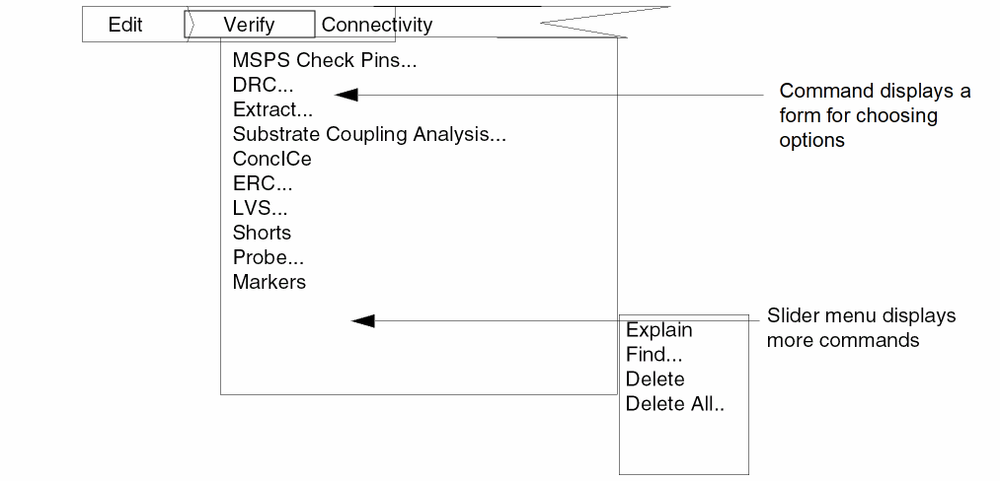

2
Running Diva Verification
You can run Diva from the Cadence or UNIX environment, or you can run Diva remotely.
-
To use the Diva interactive graphics mode, you must work in the Cadence environment. When you do a DRC or extraction, Diva runs in the foreground. When you run an ERC or an LVS, the program runs in background mode and lets you do other work in the Cadence environment.
There are three ways you can run Diva in the Cadence environment.- Open a design window, and select the Verify menu commands.
- Open the Cadence design framework II, and type SKILL commands in the Command Interpreter Window (CIW). See Chapter 3, Executing Diva Verification Using SKILL Commands for more information on SKILL commands.
- Open Cadence design framework II in nongraphics (-nograph option) mode, and type SKILL commands at the prompt. See Chapter 3, Executing Diva Verification Using SKILL Commands for more information on SKILL commands.
During interactive DRC and extraction runs, the rules being executed are normally echoed in the CIW. There are two conditions that impact this display.- Rule optimization changes the order in which rules are executed and combines multiple rules into a single execution step. For combined rules, all the combined rules echo as components of the single execution step.
- If you run in hierarchical mode, the execution of the rules is not echoed in the CIW. The complete rule set is executed for every cell being processed, and an echo of this in the CIW and in the run log generates unacceptably large quantities of repetitive data.
- When you use the UNIX environment, Diva is not interactive. You do not need a graphics terminal. Rules are echoed to the the screen. The results of the run are saved in a new version of the design. You can graphically display the new version and the errors by running interactive Diva. This means you can run a verification check in Unix mode while using Cadence software on another design, and then later display the results of the check. See Chapter 3, Executing Diva Verification Using SKILL Commands for more information on UNIX commands.
- When you run remote, you can run Diva on one design while you work on another. You can run Diva on a remote server or workstation, or on the local machine as a batch job. When the server completes the remote verification, you can display the results on the local workstation and correct your design.
Interactive Mode
Running Diva interactively lets you run a verification check and then display and probe errors on the screen. This graphics capability can significantly reduce the time you spend finding and correcting errors.
You can run Diva interactively in one of the following ways:
- Open a design window in the Cadence design framework II environment and select the Verify menu commands.
- Open the Cadence design framework II environment and type SKILL commands in the CIW.
Using Verify Menu Commands
The Cadence software displays designs in layout or schematic windows. You can access Diva commands from the Verify menu at the top of either a layout or a schematic window. For information about other menus on the menu banner, refer to Virtuoso Layout Editor User Guide. For information about using the Verify menu, forms, and options windows, see Chapter 1, “Introducing Diva Verification.”
Using Commands from a Layout Window
To access Diva’s commands from a layout window, perform these steps.
- Select Verify from the menu banner.
-
Select the Diva command you want to use. A brief description of each command follows the menu. For a detailed description of each command, see Chapter 14, “Verify Menu Commands.”

DRC checks a layout for design rule violations. DRC puts any errors found on the marker layer. You can highlight and display information about errors using the Markers commands.
Extract extracts devices and connectivity to prepare a layout for ERC and LVS checks. Extract puts any errors found on the marker layer. You can highlight and display information about errors using the Markers commands.
ERC checks an extracted cellview of a layout or schematic for electrical violations. ERC lets you highlight and display information about any errors found.
LVS compares two versions of a circuit. You can compare two layouts, two schematics, or a layout and a schematic. You can highlight and display information about any differences found.
Probe highlights and displays information about devices and nets in a layout following an ERC or LVS run. Single-probing lets you highlight a net or device in a single cellview. Cross-probing lets you highlight a net or device in two different cellviews that have been compared using LVS.
Markers displays the Markers menu, which contains commands that let you find error or warning markers in a layout.
Explain displays a window showing the reason for the error or warning marker.
Find searches for and highlights each error and warning marker.
Delete permanently removes an error or warning marker.
Delete All permanently removes all error and warning markers for the current cellview or the complete hierarchy.
Using Commands from a Schematic Window
To access this software’s commands from a schematic window, perform the following steps.
-
Select Tools - Diva from the banner menu.
The menu Verify gets added to the menu banner. - Select Verify from the banner menu.
Select the Diva command you want to use from the Verify menu. A brief description of each command follows the menu. For a detailed description of each command, see Chapter 14, “Verify Menu Commands.”
ERC checks an extracted cellview of a schematic or layout for electrical violations. ERC lets you highlight and display information about any errors found.
LVS compares two versions of a circuit. You can compare two layouts, two schematics, or a layout and a schematic. You can highlight and display information about any differences found.
Probe highlights and displays information about devices and nets in a layout following an ERC or LVS run. Single-probing lets you highlight a net or device in a single cellview. Cross-probing lets you highlight a net or device in two different cellviews that have been compared using LVS.
Using SKILL Commands
In addition to using the pulldown menus, you can type SKILL commands in the CIW. For detailed descriptions, syntax, and examples of these commands, see Chapter 3, Executing Diva Verification Using SKILL Commands.
Batch Mode
Running Diva in batch mode lets you run a verification check either in another window or on another machine while you continue to work on a different application. When you run Diva in batch mode, you do not need a graphics terminal. You can run a verification check on a machine without graphics capability and then later display and probe the errors on a machine with graphics capability.
You can run Diva in batch mode by using either the Cadence design framework II environment or the UNIX environment.
- Open the Cadence design Framework II environment in the nongraphics (no-graph option) mode and execute the SKILL commands with the necessary arguments. For detailed descriptions, syntax, and examples of these commands, see Chapter 3, Executing Diva Verification Using SKILL Commands.
-
Type
ivVerifyat the UNIX prompt. For a detailed description, syntax, and examples of this command, see the ivVerify section in Chapter 3.
Remote Mode
With Diva remote verification, you can run verification on one design while you work on a different machine. You can run verification on a remote server or workstation, or on the local machine as a batch job. When the server completes the remote verification, you can display the results on your local workstation and correct the design.
When you run a job on a remote workstation, Diva remote verification uses the NFS file system to access the data you are working with on the local machine or any other machine.
- Open a design window in the Cadence design framework II environment.
- Select the Verify menu command DRC, Extract, ERC, or LVS.
- Select the remote option for Machine and enter the machine name in the field provided. A blank entry in this field tells Diva to use the local machine.
Prerequisites
Before running Diva remote, you must
- Have this software (DRC, Extract, ERC, or LVS) and licenses available on the remote machine.
- Set up the local and remote machines to run this remote tool as described in the following section.
Setting Up Machines for Diva Remote Verification
After the Cadence tools and licenses are installed on the remote and local machines, you must set up the machines to run Diva remote by performing the following steps.
- Modify the rhosts file on the remote machine to allow the localmachine access to the remote machine.
- Make sure you have not defined restricted access to your local machine by using an xhost command in you initialization (.xinitrc). The remote machine must be able to talk to the local machine.
- Note whether your remote machine setup causes messages to be returned when you use rsh. For example, an entry in the .cshrc of the remote machine stty erase ^H causes a message to be echoed when the rsh command executes that .cshrc. This echo might cause a problem in some cases.
- Using mount or automount, make the data you are working with on the local machine accessible in read and write mode from the remote machine.
-
Check the access you have to the software on the remote machine. You can do this by typing the following command on the local machine:
rsh remote-machine ivVerify -V
This should return with a line of the formivVerify.exe version 5.0.0 01/01/2006 17:37 (cds9216)
On some machines, you need to use remsh instead of rsh.
Check the version number to ensure you are using the correct program. This is the version number of the Diva verification software that is running on the remote machine. If the version number is incorrect, you need to change the file that sets the search path on the remote machine, or you need to install the correct version.
If rsh fails and prints “Permission Denied,” you do not have permission to run this program on the remote machine. See your local system administrator to correct this. You might need to update the .rhosts file on the remote machine.
If the rsh returns with the message “ivVerify: Command not found” the file that sets the search path on the remote machine does not define the path containing Diva. - You must decide whether you want to use manual or automatic file mapping. If you choose manual file mapping, you need to set up a map file. See the following section on “File Mapping” for more information.
- To improve the performance of the remote processing, keep network traffic to a minimum. Diva creates temporary files of the form hostname_8356_1234_1.pdv. Accessing these files through the network can be very slow, so they should be created on a local disk. You can do this by setting the DRCTEMPDIR environment variable to a local directory. This eases network traffic and lets DIva run faster. When you set this variable, you must take into account the disk capacity of the remote machine.
File Mapping
The Diva remote verification program needs to access data from machines other than the server it is running on. Therefore, the file paths on the machines must be mapped.
File mapping is the process of determining the name of a file on the local machine as it is seen from the remote machine. For example, a file on the local machine called /usr/ucb/vi might be referenced from the server with the name /net/ziggy/usr/ucb/vi.
There are two ways to do this: manually and automatically.
- The manual methodology requires you to create a mapping file, but is independent of the automount methodology or the complexity of the automount configuration file.
- The automatic methodology requires no special setup, but has a small start-up run-time overhead. Because the automount methodology relies on simple automount usage, it might not work with AFS, and it might not work with complex automounts.
If this remote tool interface program does not find a manual mapping file on the local machine, this software runs in automatic mode.
See the following sections for more information about manual and automatic file mapping.
Manual File Mapping
Manual mapping is used when the Diva finds a map file. The map file must be in one of the following locations on the host machine:
- Current directory
- Home directory
-
<your_install_dir>/tools/dfII/local/divamaps
(Replace your_install_dir with the location your Cadence software was installed in.)
The map file name must be of the form:
diva.local.remote.map
Is the name of the machine you are running on.
Is the target machine for Diva remote verification execution (remote).
The machine name used is the canonicallized machine name returned when you type the SKILL procedure ivGetHostName (machine) in the CIW.
Map files have a two-column format that contains directory definitions. The columns can be separated by spaces or tabs, and each line consists of one map entry.
The first column in the map file is the name of the directory as it appears when referenced from the local machine. The second column is the name of the directory as it appears from the remote machine. The directories can reside on any machine. For example,
diva.ice.snow.map
/ /net/ice
/usr /net/ice/usr
/net/snow /
/net/snow/usr /usr
/net /net
The first two entries refer to directories on the local machine (ice) so the first column has direct references and the second column uses automount addresses.
Conversely, the next two directories reside on the server machine (snow) so the second column has direct addresses and the first column uses automount.
The last entry allows any other machine to be accessed through automount. The address of other machines is the same from both the local and server machines.
The map file is sorted by length of name of the local directory so that longer paths match before shorter paths. The first entry that matches determines the mapped name.
Automatic File Mapping
Automatic file mapping uses two daemons, cdsd and remoteDivad. The cdsd daemon must be running on all computers that have design data or run Cadence tools. The remoteDivad daemon is started automatically by the Cadence graphic editor.
Once the cdsd daemon is started, it runs forever if not manually terminated. The remoteDivad daemon terminates when you exit the graphics editor. If you change servers, the daemon is terminated on the original server and started on the new server. The remoteDivad daemon is not used if you choose the local machine as the server.
The first time file mapping is required for a given server there is a slight delay as the remoteDivad daemon is started on the remote server. Network problems might increase this delay. Subsequent mapping is not delayed.
Limitations
The remoteDivad daemon scans through the /etc/fstab file on the server to determine what a file name should map to. It can also work with automount. However, it might be confused if you use automount with complex configuration files. To ensure the daemon works correctly, keep your mounted NFS files mounted with either the mount command, such as defined by the /etc/fstab/ file, or with simple automount, such as automount /net -hosts.
Controlling Diva Verification
Diva verification lets you control certain aspects of the verification run. This section explains different commands you can use to
- Override run modes on a cell-by-cell basis
- Create a log file of all marker shapes created during the Diva verification runs
- Save the status of a verification run at any point
- Execute DRC and Extraction rules under conditions you specify
- Control SKILL access to the DFII database
- Set environmental variables
- Specify where Diva stores temporary files
- Control what cells are referenced in your circuit hierarchy
- Convert cells in the hierarchy into instances of devices
Controlling Run Modes Using Properties
For the ivDRC and ivVerify commands, the run modes can be overridden on a cell-by-cell basis by adding a property to the cell. The property overrides the option on the command line for the cell containing the property and all cells below it in the hierarchy.
Syntax
hdrc = mode
Fields
The value of the property enclosed in double quotation marks (“ ”). The value can be any one of these single characters, or a string starting with that character:
Flat. Equivalent to the ?hier nil option.
Nonoptimized hierarchical. Equivalent to ?hier t plus ?optimize nil.
Optimized hierarchical with expanded mosaics. Equivalent to ?hier plus ?optimize, except mosaics are expanded.
Optimized hierarchical with unexpanded mosaics. Equivalent to ?hier plus ?optimize.
References to the expansion of mosaics identifies how they are processed in the pattern recognition optimization. In expanded mode, the mosaic planes are treated as contiguous data without interplane boundaries or repetition. In unexpanded mode, the interfaces between the planes are optimized the same as interfaces between cells.
Example
In this example, the cell is checked hierarchically with optimization, while mosaics remain unexpanded.
hdrc = "U"
If you leave the inclusion limit to its default of 1,000, all cells are processed. For more information on specifying the inclusion limit, see the ?inc argument in the ivDRC, ivExtract, or ivVerify command.
Creating a Log File
The drcCreateLogFile command lets you create a log file that lists all marker shapes created during an Diva verification run. You can use the coordinates in this list to reference the errors and then cross them off the list once you have fixed them. You can use the drcCreateLogFile command in the CIW or in a SKILL program.
Syntax
drcCreateLogFile( topCellId [keyed arguments] )
Fields
The ID of the top-level cell. You get the top cell ID by typing the command cv=dbOpenCellViewByType( "lib" "cell" "view" ) in the CIW.
Options used for keyed arguments. You can specify the following options:
Name of the log file. The existing data in this file is overwritten when any new text is written to it. Diva verification writes the log file to the CIW by default.
The name of the property to filter, such as “drcWhy” or “extractWhy.” The default is no filtering.
If t, a full hierarchical summary is generated. Otherwise, only a log file for the top-level cell is generated.
Number of digits to the right of the decimal point to be used when the numbers are printed. For example, a value of 2 might cause coordinates to be printed such as 5.25, while a value of 3 might produce 5.252. The default value is 2.
The default page width is 80 characters. Lines that exceed 80 characters are broken into multiple lines.
The default page width is 0, which disables this feature. If you use this argument, the system inserts a page header at the top of each page.
Specifies the limit to the number of lines output to the log file. After this indicated number of lines are output to the log, no more will be output. The default is no limit.
Example
drcCreateLogFile( )
Using Checkpoints
You can use the checkPoint command to save the status of a verification run at any point in its execution. You then use this run status to start another run from the final checkpoint, rather than recreating data from the beginning.
To create checkpoints, you enter the checkPoint command in the verification rules file. The checkPoint command creates a directory, if it does not already exist, and stores run data in that directory. You specify the directory name with the checkPoint command.
You can use multiple checkPoint commands in the rules file. You can insert as many checkpoint commands as you want. At each checkpoint, the data resulting from the previous checkpoint is overwritten by data from the most recent checkpoint. Only the last checkpoint data is saved. If the run finishes successfully, all the stored data is removed.
Adding a checkpoint at the beginning or end of the rules has no effect. At the beginning, Diva has not yet created any data so there is nothing it can checkpoint. At the end, the Diva verification is complete and results are saved, so there is no data to save.
The checkpoint process creates many files in the checkpoint directory. These files are used when you restart a run. Do not alter the checkpoint files or use the checkpoint directories to store other files, or you might jeopardize the integrity of the run.
If you are doing an extraction, or the DRC checks generate errors, the checkPoint command creates a library called cpLib in the directory you specify.
You cannot use the checkPoint command in hierarchical processing.
To restart the program, you use the ivRestart command. See the “ivVerify” for more information about the ivRestart command.
Syntax
checkPoint( name )
Arguments
Defines the directory under which the checkpoint files are created. If this text string (in quotation marks) matches an environmental variable, the contents of that variable are used as the string.
You can enter a full or relative path to the checkpoint directory.
If the named directory exists, it is used along with any existing files. If it does not exist, it is created. If for any reason the directory cannot be created, the run terminates with a warning message.
Examples
The following example creates the directory my_checkpoint for the temporary layers:
checkPoint( "my_checkpoint" )
In the following example, the first command in the UNIX environment sets the environmental variable CHECK_DIR to the value of my_checkpoint. The second command in the verification rules file creates a directory that references the CHECK_DIR environmental variable.
setenv CHECK_DIR my_checkpoint
checkPoint( "CHECK_DIR" )
Conditional Execution of Rules
During rule deck compilation, you can choose which checks and operations are to be performed. After grouping the rules, you use the if-then-else capability of the ivIf command to define the conditions under which each group is compiled. You can also use the avSwitch procedure in a SKILL if statement.
You can define the condition as a “switch” name or logical combination of switches. A switch name can be any name you choose or the default switch names like drc? and extract?. If you choose your own switch name, you must specify that name at run time. If you use only the default names, you do not need to specify a switch name at run time.
Syntax
ivIf( condition ... then then_rules ... [else else_rules ...])
Description
Divides the verification rules into groups and makes the execution of those groups dependent on conditions determined at rule compilation time.
When Diva evaluates the if condition, if the result is t (true), the then group of rules is compiled. If the result is nil (false), the else group of rules is compiled.
If there is only one rule in each group, the then and else keywords are unnecessary.
ivIf(empty). You should only use raw graphical layers. The ivIf command is evaluated at rule compilation time, so it is not possible to know if a derived layer will be empty or not when the compiled rules are executed.Arguments
Determines which of the subsequent groups of rules is compiled. The result of the condition is always t (true) or nil (false).
The condition can be a single expression or a complex combination of expressions. You can use the following operators and procedures in your condition.
Tests for the switch name you define. You must enclose the switch name in quotation marks.
Tests for the absence of data on the specified original graphics layer. Derived layers are not allowed since the value of the expression is determined when the rules are compiled.
The use of derived layers is no longer supported due to changes in the task execution engine which preclude run time evaluation of the procedure.
Combines expressions in an AND operation. You can concatenate any number of expressions. For example
switch( "A" ) && switch( "B" )If all expressions return t, the result is t. If one of the expressions returns nil, the result is nil.
Combines expressions in an OR operation. You can concatenate any number of expressions. For example,
switch( "A" ) || switch( "B" ) || switch( "C" )
If any expression returns t, then the final result is t. If all of the expressions return nil, then the result is nil.
Reverses the meaning of one of the following expression. If you place “!” in front of the expression, it behaves as a NOT operator. For example, if the expression is switch, the ! operator reverses the meaning to not_switch.
To negate a complex expression, you must enclose it in parentheses with the operator preceding the opening parenthesis. For example,
!(switch( "A" ) || switch( "B" ))
The following examples show how you can combine the procedures and operators.
( switch( "A"= ) && switch( "B" ) ) ||
!switch( "C" )
( switch( "A" ) && switch( "B" ) ) ||
( switch( "C" ) && switch( "D" ))
Optional keyword for the group of expressions to be executed if the result of the if condition is t. If only one expression in the group is to be executed, you can omit the keyword.
Commands to be executed if the result of the if condition is t. These can be verification commands or SKILL procedures.
Optional keyword for the group of expressions to be executed if the result of the if condition is nil. If no expressions are to be executed, you can omit the then keyword. If both the then and else groups have only one expression each, you can omit the then keyword.
Commands to be executed if the result of the if condition is nil. These can be verification commands or SKILL procedures.
Examples
The following are some examples of the command.
ivIf( switch( "do_drc" )
then
drc( gate "cut" sep < 3 )
drc( "poly" width < 2 )
)
If the switch do_drc is set, the two drc commands run. All subsequent commands run no matter how the switch is evaluated.
ivIf( !empty( "poly" ) && !empty( "diff" )
gate = geomAnd( "poly" "diff" )
)
If the original graphics layers poly and diff contain data, the subsequent layer processing command runs.
ivIf( switch ( "do_simple" )
then
length = measureParameter( length( gate inside poly ) 0.5 )
else
temp = measureParameter( length( gate inside poly ) 0.47 )
width = measureParameter( length( gate coincident poly ) ;0.52 )
bends = measureParameter( bends_all( gate inside poly ) )
length = calculateParameter( temp - ( width * bends * 0.5 ) )
)
If do_simple is set, the one-line measurement method is used. If do_simple is not set, a more complex form of measurement that considers bends is used.
Default ivIf Switch Values
Diva has a number of predefined switch names you can use with the ivIf(switch) command and the avSwitch SKILL predicate function.
DRC and Extraction
You can switch the DRC and Extraction sections of the rules file automatically using the default switches drc? and extract?.
When you run DRC, the drc? switch is automatically enabled. The switch extract? is de-activated.
When you run Extraction, the extract? switch is automatically enabled. The switch drc? is de-activated.
General Options
Diva will set various switches depending on the options chosen on the DRC and Extract forms, or on the ivVerify command line.
The user checked the "Echo Commands" box on the DRC form or the -echo ivVerify option.
The user selected the "by area" limit on the DRC form or the -area ivVerify option.
The user selected the "full" limit on the DRC form or the -full ivVerify option.
The user selected the "macro cell" mode on the Extract form or the -macro ivVerify option.
The user checked the "Join Nets With Same Name" box in the form or the -join ivVerify option.
The user selected the "flat" method on the form or a hierarchical ivVerify option was not selected.
The user requested that Diva ignore missing masters while reading the design data.
Hierarchy Control
DRC has three switches that are set during certain phases of execution. These switches let DRC perform a specific class of design rule checks.
-
hier?
This switch lets you use a different set of rules in hierarchical mode than in flat mode. In hierarchical mode, the hier? switch is automatically on. -
currentCell?
This feature lets you write rules that are cell based and not truly hierarchical. The currentCell? switch is toggled on and off as the design is checked. In hierarchical mode, checking occurs in two passes. The first pass uses only the polygons in the current cell. The second pass runs in flat mode, from the current cell down, rechecking small areas where two instances overlap or where an instance and a polygon overlap in the current cell. The currentCell? switch is set on in the first pass and set off in the second pass. -
topCell?
This switch, when present, instructs Diva to perform a flat DRC analysis on the top cell after all hierarchical checking is done. You can use this feature to check sparse data, for example pads, to improve execution speed.
In the final pass, you can run a rules check in flat mode on data that is best checked in flat mode. For example, pad checks have limited data and do not check efficiently in hierarchical mode.
In addition to the phase related switches, hierarchical mode can set the switch optimize? to indicate that the user selected the "hierarchical" mode on the DRC form instead of the "hier w/o optimization" mode.
Rules File Example
To understand how the switches can be used, consider four simple checks on a design.
- Flag any metal spacing less than 0.5 microns.
- Flag any pad spacing that is less than 10 microns. The pad layer is a sparse layer and is better checked in flat mode. This check can be done in hierarchical mode, but it increases the size of the halo, which makes the program run slow even when there is no pad layer in the vicinity.
- Check that any cell containing layer Q also contains layer R and that layer R is exactly 0.4 micron larger than layer Q. This can be checked by using the currentCell? switch.
-
Check that no part of the design is more than 1 micron from a piece of metal. This check is easily done in flat mode.
m1g = geomSize( "m1" 0.5 ) err = geomAndNot( geomBkgnd() m1g ) saveDerived( err "m1 coverage error" )
The problem in hierarchical mode is that instances form an area where no polygonal data exists and a large error is generated. It is necessary to find errors that are not over instances, yet errors must also be found that are between instance polygons and cell polygons.
Diva solves this problem by introducing a new layer in the data base, m1 boundary. As the design is processed, a boundary shape for m1 is created. The check is done by looking at shapes at the current level and m1 boundaries from instances that have already been processed.
The rules for the check follow. The rules apply only to hierarchical mode.
drcExtractRules(
ivIf( switch( "drc?" ) then
ivIf( switch( "hier?" ) then
ivIf( switch( "topCell?" ) then
; check 2
pad = geomOr( "pad" )
drc( pad sep < 10 "pad spacing less than 10" )
else
m1 = geomOr( "m1" )
; check 1
drc( m1 sep < 0.5 "m1 spacing less than 0.5" )
ivIf( switch( "currentCell?" ) then
; check 3
check3 = geomXor( geomSize( "Q" 0.4 ) "R" )
saveDerived( check3 "R and Q check" )
; check 4
; Remove any m1 boundary shapes because they are
; going to be rederived
geomErase( "m1" "boundary" )
; Collect m1 in the current cell with m1 boundary
; polygons from one level down in the hierarchy.
m1b = geomOr( "m1" geomGetPurpose( "m1" "boundary" 1 1 ) )
; Grow the m1 shapes by 0.5 microns to find areas
; that are not covered.
m1bg = geomSize( m1b 0.5 )
; Get the cell boundary to
; (1) determine where a coverage error should be flagged.
; This gets rid of errors on the boundary of the cells.
; (2) build the m1 boundary for the current cell.
;
; The hdrc boundary shapes were calculated just prior
; to rules execution in the current cell.
cell_bnd = geomGetPurpose( "hdrc" "boundary" 0 0 )
cell_bnd_shrunk = geomSize( cell_bnd -0.5 )
check4 = geomAndNot( cell_bnd_shrunk m1bg )
saveDerived( check4 "m1 coverage error" )
; Derive the m1 boundary for the next level of hierarchy.
m1_bnd_next = geomOr( "m1" cell_bnd_shrunk )
saveDerived( m1_bnd_next ( "m1" "boundary" ) )
)
)
else
/*
* Rules to run in flat mode.
*/
m1 = geomOr( "m1" )
drc( m1 sep < 0.5 )
/*
... other flat checks ...
*/ .....
)
)
)
Controlling SKILL Access
You can have SKILL access to the DFII database during Diva verification execution prior to saving the data to disk, which provides a simple interface and alleviates the read-write overhead. The ivCallProc command provides access to the DFII database only. There is no SKILL access to the Diva’s internal data structures or edge files.
During hierarchical extraction, SKILL Access is applied for each pass over the rules, which corresponds to each cell being processed.
Syntax
ivCallProc( procedure )
Description
You can place this command anywhere in the rules file. Placing this command in a DRC rule deck will only provide access to the layout view. Any marker generating rules which execute before the ivCallProc will result in the markers being present in the layout view. It is recommended that markers not be modified though use of the ivCallProc command. Markers stored in the ivEDB error database are not accessable from within an ivCallProc. Depending on where you place this command in an Extract rule deck, it has the following results:
- If you place the command at the beginning of the rules file, the extracted view is available for processing but is empty because the tool has not done any work yet. You can add cell properties at this point.
- If you place the command after an extractDevice command in the rules file, the extracted view contains the instances of the devices. The devices are connected, but they do not have parameters such as length and width attached.
- If you place the command after the saveParameter command in the rules file, the device instances have properties attached.
- If you place the command after saveParasitic in the rules file, the extracted cell contains parasitic devices.
- If you place the command at the end of the rules file, the extracted cell is complete except for the schematicLastExtracted property.
Arguments
The name of the SKILL lambda procedure you specify.
Diva passes a disembodied property list to the procedure. This property list contains the cell environment at the point in the execution of commands (rules file) where the ivCallProc command is referenced. There are four possible property values, which are database IDs of cellviews being processed or created. For hierarchical processing they refer to the current cell.
Examples
The following example places the name of the user who created the extracted cell on the extracted cell.
ivCallProc( lambda( (ids)
let( ( myName )
if( ids->extracted then
myName = getShellEnvVar( "LOGNAME" )
dbReplaceProp( ids->extracted "creator" "string" myName
)
)
)
)
The following example adds a property to each nfet in the extracted cell.
x = lambda( (ids)
let( (nfet nfets q)
if( ids->extracted then
nfets = setof(q ids->extracted~>instances q~>cellName == "nfet")
foreach( nfet nfets
dbReplaceProp( nfet "myProp" "int" 3 )
)
)
)
)
ivCallProc( x )
The following example adds a property to each nfet in the extracted cell with a procedure.
procedure( addNfetProp(ids)
let( (nfet nfets q)
if( ids->extracted then
nfets = setof(q ids->extracted~>instances q~>cellName == "nfet")
foreach( nfet nfets
dbReplaceProp( nfet "myProp" "int" 3 )
)
)
)
)
ivCallProc( getd( 'addNfetProp) )
Special Procedures
ivGetCellView
ivGetCellView ()
Description
From the rules file, this procedure gets the database ID of the layout cellview being processed, from which the cell, library, and techfile can be accessed. Properties associated with these are available for use in the rules.
When this procedure is called, the optimized rules are marked as not being reusable. Subsequent runs of Diva verification will compile and optimize the rules, even if they have not been changed. This is necessary because the rules compiler cannot detect that a property used as a parameter in the rules has been changed.
ivCompilingFor
ivCompilingFor (string...)
Description
From the rules file, this procedure returns t if any of the strings passed as arguments contain the constant diva. It is expected that the results of calling the procedure will be used in a SKILL if statement. You can use the SKILL statement to select the Diva rules in a rule deck containing both Diva and Assura rules.
Additional strings are available if your rule deck must adapt to multiple releases of Diva. Appendix A, What Is New In Diva, documents these strings with the changes they can indicate the availability of.
Example
The following example shows the use of this procedure to implement a check in a rule deck which supports both Diva and Assura.
if(ivCompilingFor(“diva”)
then a=geomSize(geomSize(m1 -0.5) 0.5)
else a=geomWidth(m1 keep > 1.0)
)
avSwitch
avSwitch (string...)
Description
From the rules file, this procedure returns t if the string passed as an argument is a switch name set by the user through the use of the -set option in the ivVerify or LVS commands. Otherwise, avSwitch() returns nil. You can use this procedure to select rules in the rules deck.
Example
The following example shows the use of avSwitch() to implement a conditional execution of rules in a rules file.
if(avSwitch("sw1") then a = geomSize( m1 0.5 ) else a = geomWidth( m1 keep > 1.0 )
)
If the above is invoked with the option:
# ivVerify -set "sw1"
then the rule
a = geomSize( m1 0.5 )
will be executed. Otherwise, the rule
a = geomWidth( m1 keep > 1.0 )
will be executed.
geomOption
geomOption(keyword value)
Description
Usable from the rule deck or the CIW, this command allows the user to set options that affect how Diva runs. Some keywords are temporary and will not be documented here.
Equivalent to the -v option on the ivVerify command line, the value, a positive integer, controls the amount of additional information displayed during the Diva run. The default value is zero. This is intended as a debugging aid so the specific content for any given value is subject to change and must not be relied upon by the user.
When the value is nil, Diva will not display the messages about unused tasks being removed. The default value t, which displays the unused tasks being removed.
When the value is t, Diva renders paths into polygons before scaling to internal units. When the value is nil, Diva renders paths into polygons after scaling to internal units. For angled path segments, nil produces a more accurate polygon, but can be different from what is visible in the layout editor.
The default value is nil in DFII on CDB for consistancy of results with previous versions of Diva. The default is t for DFII on OA since the OpenAccess path rendering API produces different results when compared with CDB and user input has been to use what is displayed since differences in errors are inevitable.
Controlling Properties and Variables
When you use the DRC and extraction tools, you can use environmental variables and database properties to control the behavior of various aspects of the program.
To set up the environmental variables automatically when you log in, place them in your .cshrc or .login file under csh or in your .profile file under sh. Database properties are set using the Virtusoso GUI
Storing Temporary Files
By default, any temporary layer files that Diva generates are placed in the directory in which you started this verification.
If you want Diva to store temporary files in other directories, use the DRCTEMPDIR environmental variable. The directories you specify need not be on the same disk as Diva. Each directory can be on a different disk.
To specify where you want to store the files, define the environmental variable as follows:
setenv DRCTEMPDIR "directory"
setenv DRCTEMPDIR "directory1 directory2 directory3 ... "
Temporary layer files created by Diva are named according to this format:
machid_pid_lyrid_fileno.pdv
The following is an example of a temporary layer filename:
machineA_101_20_1.pdv
The maximum size of any single temporary layer file created by Diva is 256 megabytes. Layers that exceed this file size limit are split into multiple files. The first file has a file number 1, the second file has a file number 2, and so on. As an example, a 3-gigabyte layer resides in 12 files.
When one or more disks is filled, Diva continues to allocate files to the remaining directories. If a file is too large for a directory, that file is automatically split, and the remainder of the file is placed in the next directory or disk with free space. If Diva fills all the disks that contain directories in the DRCTEMPDIR list, and there are still more files to store, the Diva verification terminates and the files are removed.
Including and Excluding Cells
By default, Diva verification processes all cells in the hierarchy of a circuit. To specify that a cell be ignored during the processing, you provide a non-negative integer value using one or more of the following methods:
- Provide a user-defined SKILL procedure to dynamically generate a value.
- Define a value with an ivIncludeValue property placed on the cell instance.
- Define a value with an ivIncludeValue property placed on the cell master.
Diva evaluates these methods in the order given until one provides a valid value that is then compared to the Include Limit specified when the run was started. During hierarchical processing, only method 3 is available because the instances are not present at the time the master is processed.
The user can define a filter procedure using the run-specific file command includeValueFunc to dynamically generate the value used in place of the ivIncludeValue property.
When you start Diva, you can define an inclusion value as shown in the table below. For every cell to be processed, Diva compares this inclusion value with the value of the ivIncludeValue property:
- If the property value is larger than the inclusion value, the cell is ignored.
- If the property value is equal to or less than the inclusion value, the cell is processed.
A cell without an ivIncludeValue property is treated as if it has a property value of 0 (zero). If you do not specify an inclusion value when you start Diva, then it defaults to a value of 1,000.
| If you start Diva verification... | You set the inclusion value... |
|---|---|
Consider the following example:
Cell B has the property ivIncludeValue = 3.
Cell C has the property ivIncludeValue = 5.
Cell D has no property and references cells A, B, and C.
If you set the inclusion limit to 0 on startup, cells B and C are ignored because their property values are greater than the start-up inclusion value.
Macro Cell Mode
Normally, for the extraction of hierarchical structured layouts, Diva expands the contents of each instance of a cell in the hierarchy into a single flat representation. The flattening process continues until all cell instances are gone, leaving only shapes on layers.
Macro cell processing modifies this process so that specific cells in the hierarchy are not expanded into a flat representation, but are converted into instances of devices. When you look at the extracted cellview, instances of macro cells appear the same as normal cell instances.
Using MacroCell Processing
You can use macro cell processing to significantly reduce extraction run time when you use a cell more than once. Diva can check each cell before it is added to the system library. Using that cell as a macro cell causes Diva to treat it as a device in the layout. Diva replaces all cell internal processing by the recognition of the external connections to the cell.
You can also use macro cell processing when you have not yet designed the contents of a cell or when you don’t have access to the contents of a cell. You must define the pin connections to the cell before Diva can process it.
Defining a Macro Cell
If you specify macro cell mode, a cell becomes a macro cell based on the following requirements:
- The cell must contain one or more pins on connected layers. A layer is connected if it appears in a geomConnect command. The pins form the external connections to the cell.
-
If Diva verification is not in hierarchical mode and the user has defined a filter procedure using the run-specific file command macroCellFunc, the procedure is called with the full instance path through the hierarchy to the instance currently being tested. If the value returned is a non-empty string, the cell is processed according to that value.
The value can be:
Forces the cell to be a macro cell providing the cell has pins.
Ignores the macroCellFile and ivCellType property and lets the cell become a macro or not, based on its pins and prCellType property.
-
If Diva verification is not in hierarchical mode and the SKILL procedure is not defined or returns an empty value and the instance has an ivCellType property, the property value is used to define the processing mode.
The ivCellType property value can be:
Forces the cell to be a macro cell providing the cell has pins.
Ignores the macroCellFile and ivCellType property and lets the cell become a macro or not, based on its pins and prCellType property.
-
If the ivCellType is not found on the instance, and the macroCellFile is provided in the run-specific rules, and the cell being processed matches an entry in the file, the cell is processed according to the value defined for that cell in the file.
The macroCellFile value can be:
Forces the cell to be a macro cell providing the cell has pins.
Ignores the ivCellType property and lets the cell become a macro or not based on its pins and prCellType property.
-
If the macroCellFile is not provided in the run-specific rules, or the cell does not exist in the file, Diva uses the ivCellType property on the cell to define the processing mode.
The ivCellType property value can be
Forces the cell to be a macro cell providing the cell has pins.
-
If a cell does not have an ivCellType property, it becomes a macro cell if it has a prCellType of:
- Standard
- IO
-
CornerThe top level of hierarchy cannot be a macro cell. Even if the top cell conforms to the requirements of a macro cell, the program treats it as a normal cell. If you switch to hierarchical processing mode, the hierarchical cell control takes precedence over the macro cell interpretation unless the ivCellType property explicitly defines the cell as a macro cell.
Forces the cell to be a macro cell providing the cell has pins.
Ignores the ivCellType property and lets the cell become a macro or not based on its pins and prCellType property.
Controlling Macro Cell Hierarchy
When traversing the hierarchy, Diva verification descends into the cellview defined by the instance of the current cell unless the property originalViewName exists on the cell.
If the property originalViewName is specified for the cell, Diva switches into the cellview defined by this property providing
- Diva is not running under the OpenAccess database. The implementation of originalViewName is based on a feature of the CDB database which is not available in the OpenAccess database. Diva will issue a warning message an terminate.
- The cell is not defined to be macro or graphic by the ivCellType the macroCellFile.
- The prCellType of the cell is not macro.
- The cellview defined by originalViewName exists.
Starting Macro Cell Processing
To start macro cell extraction from a layout window, select the Extract command from the Verify menu, then select macro cell for the method in the Extract form.
To start macro cell extraction using SKILL, use the ivExtract command to specify a t value for the ?macro argument.
How Diva Verification Processes Macro Cells
When Diva recognizes a macro cell, it does not recognize or expand cell instances within that macro cell. Diva expands shapes only on layers whose purpose is boundary or shapes associated with pins.
Although the program copies the cell boundary from a macro cell (if it is on purpose boundary), the boundary is not used for connectivity processing. However, you can use the boundary to generate “keep-out” layers. Keep-out layers represent regions on the macro cell that you don’t want other cells’ layers to overlap.
Diva places every macro cell as a device instance in the extracted version. At the topmost level, it gives that instance the same name as the original cell instance in the layout. At lower levels of hierarchy, the program gives instances the names +1, +2, +3, and so on. Make sure these names do not conflict with your own cell names.
Using Cadence Environment Variables With Diva
A number of Cadence environmental variables are available to control aspects of the DIva user interface. The text to place in your .cdsenv file to match the default values is shown. An explanation of each variable follows the example text.
Environment variables affecting the DRC form
The DRC form is created once when the layerProc context is loaded so the following values are only used at that time.
Disables the initial positioning of the form. To enable control of the initial position of the form, use a value of t. Due to a limitation of the Human Interface, setting the initial position of the form results in the form appearing in the wrong position, disappearing, then appearing in the correct position. This may be annoying to users, so the default behavior is to not set the initial position.
Specifies how many pixels should be between the form edge and the left or right edge of the display, as controlled by the xrel variable below.
Specifies how many pixels should be between the form edge and the top or bottom edge of the display, as controlled by the yrel variable below.
Specifies which edge of the display the xpos variable refers to. Allowed values are "left" and "right".
Specifies which edge of the display the ypos variable refers to. Allowed values are "top" and "bottom".
Initializes the Checking Method field. Allowed values are "flat", "hierarchical" and "hier w/o optimization".
Initializes the Checking Limit field of the form. Allowed values are "full", "incremental" and "by area".
Initializes the Coordinate field.
Initializes the Join Nets With Same Name field.
Initializes the Echo Commands field.
Initializes the Switch Names field.
Initializes the checkbox portion of the Run-Specific Command File field.
Initializes the text portion of the Run-Specific Command File field.
Initializes the Inclusion Limit field.
Initializes the location text portion of the Machine field. Allowed values are "local" and "remote".
Initializes the machine name text portion of the Machine field.
Initializes the Rules File field.
Initializes the checkbox portion of the Rules Library field.
Initializes the text portion of the Rules Library field.
Initializes the checkbox portion of the Limit Rule Errors field.
Initializes the text portion of the Limit Rule Errors field.
Initializes the checkbox portion of the Limit Run Errors field.
Initializes the text portion of the Limit Run Errors field.
Initializes the checkbox portion of the Use Error Database field.
Initializes the text portion of the Use Error Database field.
Initializes the checkbox of the Ignore Missing Masters field.
The Extract form is created once when the layerProc context is loaded so the following values are only used at that time.
Disables the initial positioning of the form. To enable control of the initial position of the form, use a value of t. Due to a limitation of the Human Interface, setting the initial position of the form results in the form appearing in the wrong position, disappearing, then appearing in the correct position. This may be annoying to users, so the default behavior is to not set the initial position.
Specifies how many pixels should be between the form edge and the left or right edge of the display, as controlled by the xrel variable below.
Specifies how many pixels should be between the form edge and the top or bottom edge of the display, as controlled by the yrel variable below.
Specifies which edge of the display the xpos variable refers to. Allowed values are "left" and "right".
Specifies which edge of the display the ypos variable refers to. Allowed values are "top" and "bottom".
Initializes the Extract Method field. Allowed values are "flat", "macro cell", "full hier" and "incremental hier".
Initializes the Join Nets With Same Name field.
Initializes the Echo Commands field.
Initializes the Switch Names field.
Initializes the checkbox portion of the Run-Specific Command File field.
Initializes the text portion of the Run-Specific Command File field.
Initializes the Inclusion Limit field.
Initializes the location portion of the Machine field. Allowed values are "local" and "remote".
Initializes the machine name portion of the Machine field.
Initializes the Extracted portion of the View Names field.
Initializes the Excell portion of the View Names field.
Initializes the Rules File field.
Initializes the checkbox portion of the Rules Library field.
Initializes the text portion of the Rules Library field.
Initializes the checkbox portion of the Limit Rule Errors field.
Initializes the text portion of the Limit Rule Errors field.
Initializes the checkbox portion of the Limit Run Errors field.
Initializes the text portion of the Limit Run Errors field.
Initializes the checkbox portion of the Use Error Database field.
Initializes the text portion of the Use Error Database field.
Initializes the checkbox of the Ignore Missing Masters field.
Environment variables affecting the LVS form
Due to differences in the implementation of this form, an initial position has always been in place. Only control of where the form will be positioned is available. Unlike the DRC and Extract forms, the LVS form is created and destroyed each time it is used. The following values are used each time the form is created.
Specifies how many pixels should be between the form edge and the left or right edge of the display, as controlled by the xrel variable below.
Specifies how many pixels should be between the form edge and the top or bottom edge of the display, as controlled by the yrel variable below.
Specifies which edge of the display the xpos variable refers to. Allowed values are "left" and "right".
Specifies which edge of the display the ypos variable refers to. Allowed values are "top" and "bottom".
Initializes the Run Directory field.
Initializes the Switch Names field.
Initializes the text portion of the Rules Library field.
Initializes the Rules File field.
Initializes the text portion of the Rules Library field.
Initializes the Rewiring portion of the LVS Options field.
Initializes the Device Fixing portion of the LVS Options field.
Initializes the Create Cross Reference portion of the LVS Options field.
Initializes the Terminals portion of the LVS Options field.
Initializes the checkbox portion of the Correspondence File field.
Initializes the text portion of the Correspondence File field.
Initializes the Priority field. The allowed range is 0 to 20, inclusive.
Initializes the location portion of the Machine field. Allowed values are "local" and "remote"
Initializes the machine name portion of the Machine field.
Other environment variables
Controls generation of shapes on the changeLayer during editing. The default value of t causes shapes to be created. A value of nil causes shapes to not be generated. The variable has no effect on existing changeLayer shapes and does not affect how Diva processes shapes on the changeLayer. Changing the variable has no effect until the workbench is restarted.
Return to top